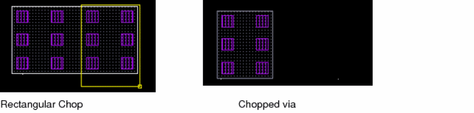
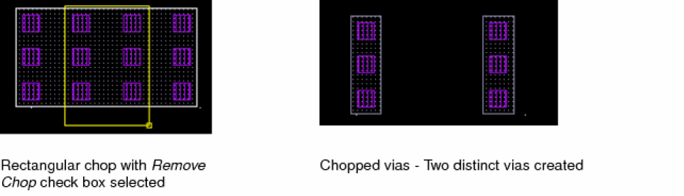
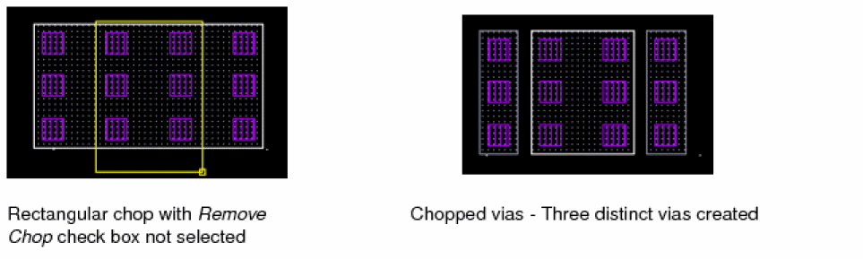

Via Chopping
The Chop command also lets you cut away part of a via object or cut a via object into pieces. The following are a few cases of how a via is chopped.
-
When a via is chopped with the Chop Shape set to rectangle, the via is chopped like other shapes, as shown in the figure below.
 -
When a via is chopped with the Chop Shape set to rectangle and the Remove chop check box selected, two distinct vias are created, as shown in the figure below.
 -
When a via is chopped with the Chop Shape set to rectangle and the Remove chop check box not selected, three distinct vias are created, as shown in the figure below.

If the Chop Shape is set to rectangle or line, two distinct vias for each original via are created. However, if the Chop Shape is set to polygon, then n distinct vias are created. However, a limitation in case of chopping vias is that if any region of the chop shape is non-rectangular, then a via is not created in the non-rectangular region.
If you are chopping a via stack, each via in the viaStack is chopped independently. The chop functionality is not supported for a cdsFixedVia via.
Related Topics
Return to top